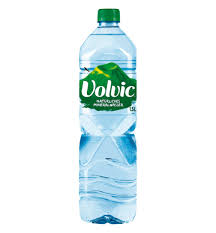
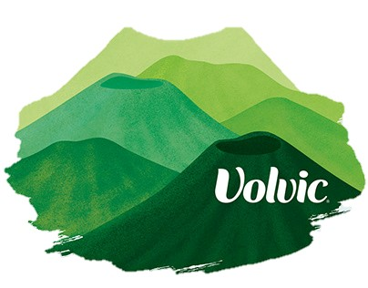

Our Water
Volvic, sourced from the ancient volcanoes of the Auvergne region in France, is renowned for unique volcanic filtration. This natural mineral water is filtered through six layers of volcanic rock, enriching it with a unique mineral composition.

The Volvic Mountains
Volvic mountains, located in the Auvergne region of France, are a 35-million-year-old chain of 80+ volcanic edifices known as the Chaîne des Puys, a UNESCO World Heritage Site. These green scenic, landscapes feature peaks like Puy de la Nugère, characterized by ancient lava flows, forests, and panoramic views.